MoLakaz TV
Setting up a TV box — the easy guide
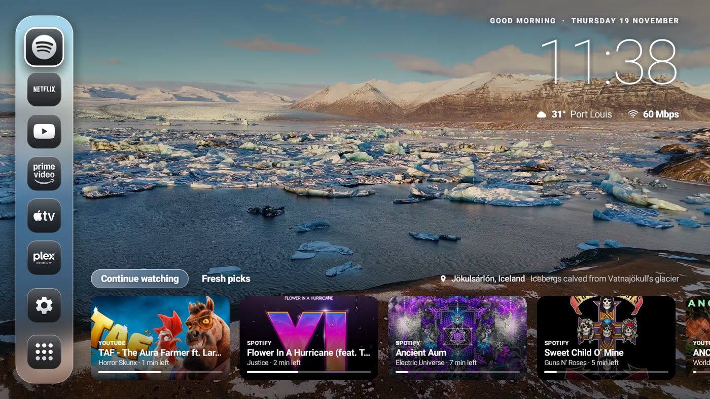
Free and open source · github.com/benosss/molakaz-tv
Setting up a TV box — the easy guide

Free and open source · github.com/benosss/molakaz-tv
Before you start
MoLakaz TV replaces the box's home screen with a calm one: nature films in the background, your apps on the left, and what you were watching at the bottom. Everything else on the box stays as it is.
| 1 · Plug in the USB stick | 10 seconds |
| 2 · Install X-plore from Google Play | 2 minutes — a free file manager, to open the stick |
| 3 · Turn on USB debugging | 2 minutes — lets MoLakaz TV set itself up |
| 4 · Install MoLakaz TV from the stick | 1 minute |
| 5 · Press OK and let it set up | 5 minutes — it copies the films and does the rest |
Steps 1 and 2
Any USB port on the box (at the back or on the side). Leave it in until the end.
X-plore is free. It lets the TV open the USB stick. You can uninstall it at the end.
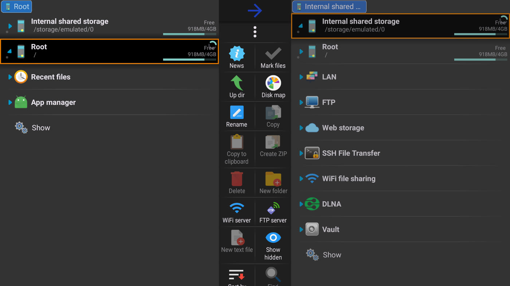
X-plore: the USB stick shows on the left, under the box's own storage.
Step 3
This sounds technical, but it's two switches. It lets MoLakaz TV set itself up on the box (permissions, the films, becoming the home screen) — the TV asks you to allow it once.
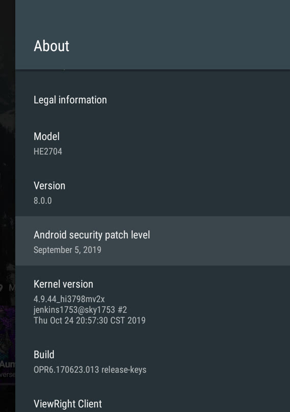
About › Build (at the bottom): press OK 7 times
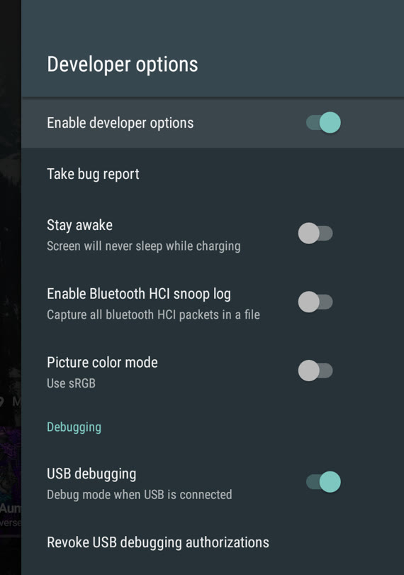
Developer options › USB debugging: on
Steps 4 and 5
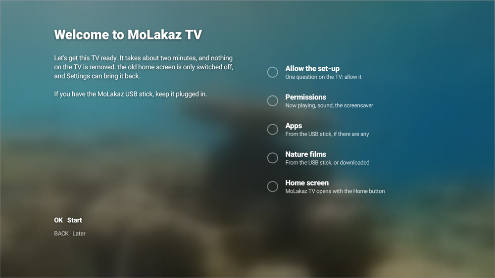
Press OK to start
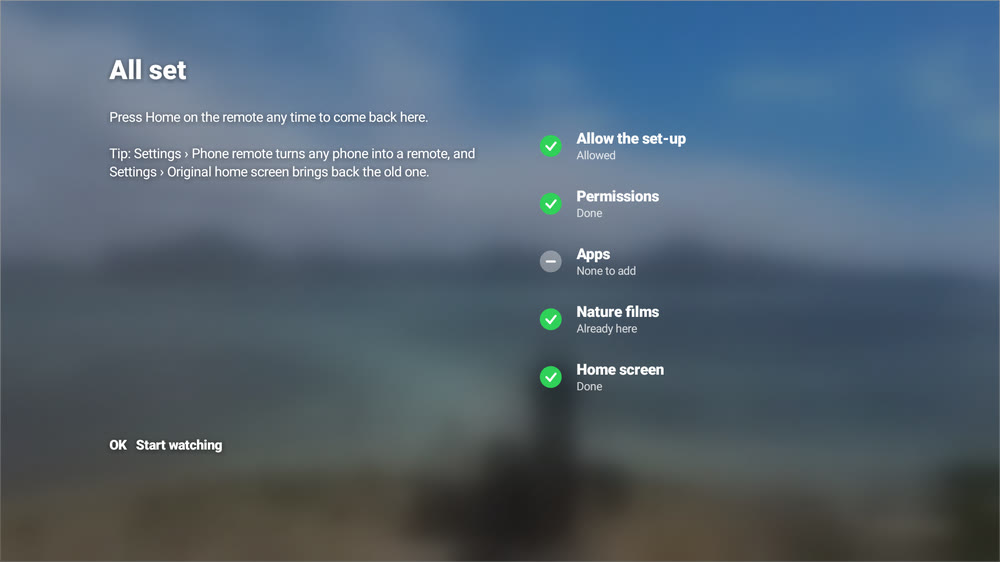
All set: press OK
Done
Press HOME on the remote any time to come back to MoLakaz TV.
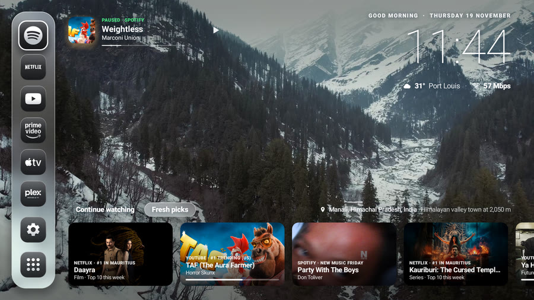
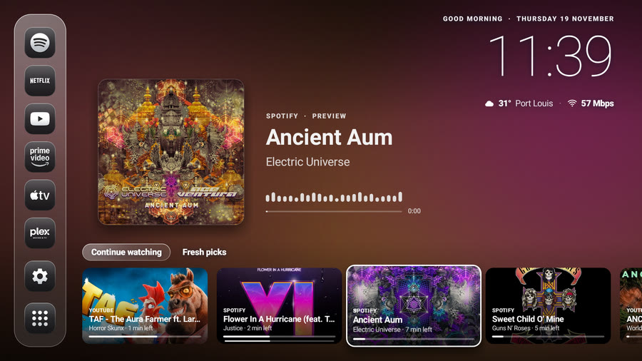
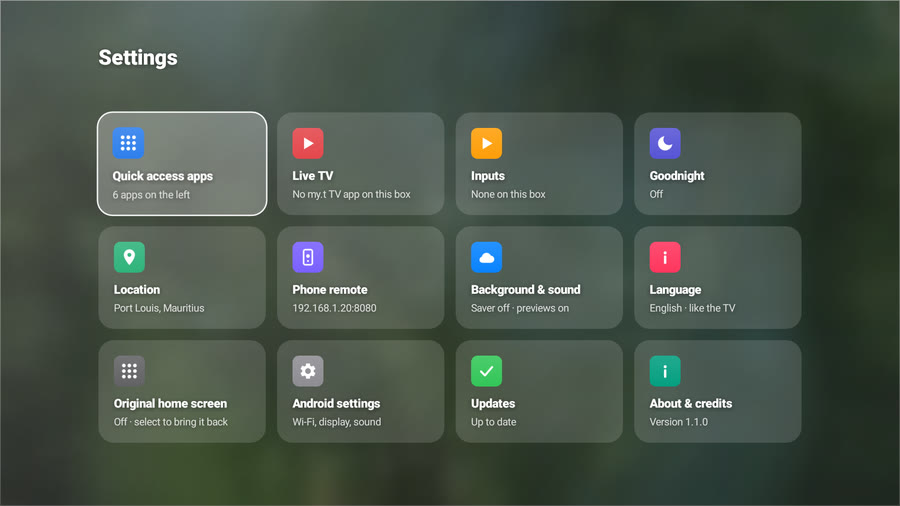
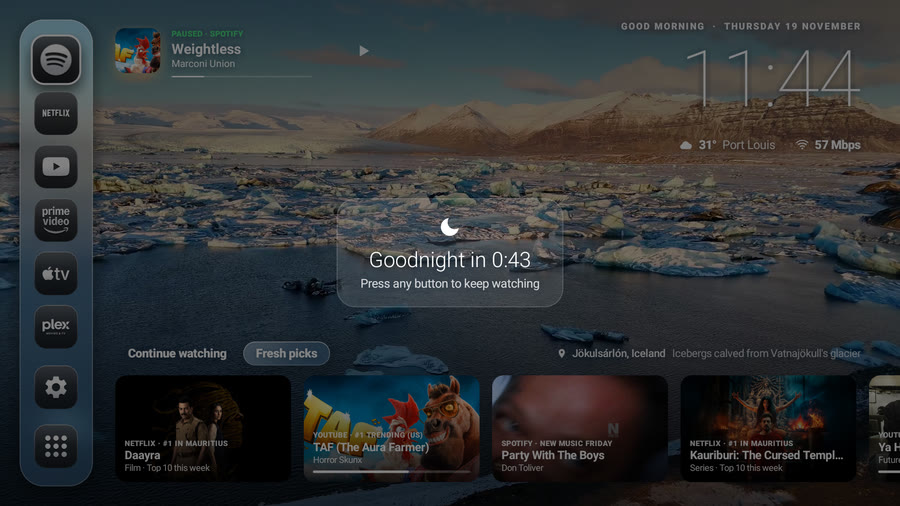
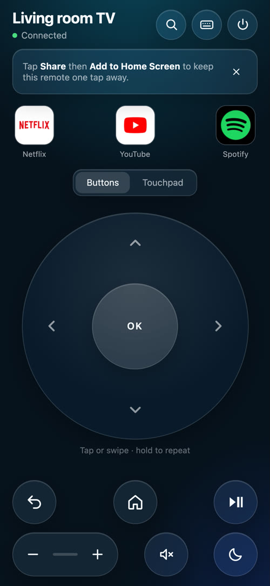
In MoLakaz TV: Settings › Phone remote. Scan the code with the phone's camera (same Wi-Fi as the TV). On an iPhone, tap Share › Add to Home Screen; on Android, ⋮ › Add to Home screen. Now it opens like an app: arrows, OK, volume, typing with the phone's keyboard, and the sleep timer.
If something goes wrong
| Google Play asks to sign in | The box has no Google account yet. Sign in with any Google account (the friend's), or use Plan B below. |
| "For your security, your TV isn't allowed to install unknown apps" | Choose Settings on that message, switch X-plore on, press BACK, then Install again (step 4). |
| Set-up says "One switch first" | USB debugging is off. Press OK: the TV's settings open. Do step 3, then press HOME — the set-up carries on by itself. |
| Set-up says "The TV didn't allow it" | The message on the TV was closed or refused. Press OK to ask again and choose OK (with "Always allow" ticked). |
| "The films couldn't be copied" | The USB stick came out or isn't read. Plug it back in, wait 10 seconds, press OK. |
| The films are black or the screen stays plain | Turn the box off and on at the wall, then press HOME. |
| The friend wants the old home screen back | MoLakaz TV › Settings › Original home screen. Choose it again later to come back to MoLakaz TV. |
If the box has no Google Play or the stick won't open, use a laptop on the same Wi-Fi: